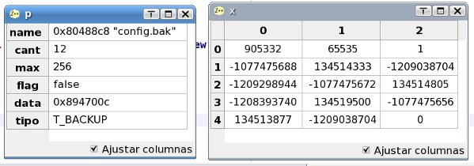

Diálogo Matriz de Inspección

Para acceder a este diálogo debe introducir una inspección en el Panel de Inspecciones, y seleccionar la opción "Explorar en tabla separada" del menú contextual (click derecho sobre la inspección). Esta opcion sólo está disponible si la inspección representa una estructura de datos compuesta (vector, matrix, clase).